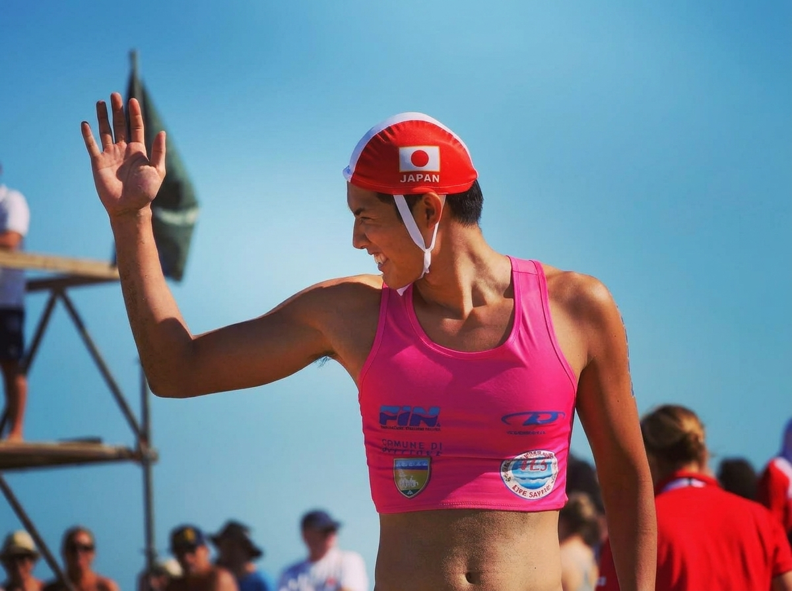

ABOUT

RYO UENO
上野 凌
" 優先順位の判断、正確性、スピード、技術が噛み合った。みんなのサポートがあって掴んだ優勝です。 "
湘南・鵠沼海岸で生まれ育ち、3歳から海を知る。幼少期の喘息をきっかけに水泳を始め、やがてライフセービングへ。慶應義塾大学在学中の2015年に日本代表入りし、2022年に主将就任。2024年ゴールドコーストでの世界大会SERC種目で日本史上初の金メダルを獲得。
海を「自分を成長させてくれる場所」と語り、平日5時半起床でトレーニングを積みながら、公共セクターのまちづくりに挑む二刀流アスリート。